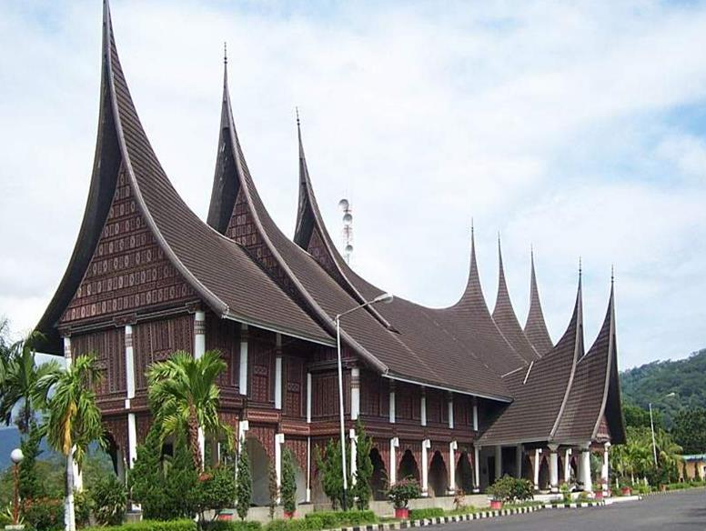

Pakaian Adat Tradisional
Ada beberapa nama pakaian adat Sumatera barat, diantaranya adalah pakaian penghulu dan bundo kanduang. Untuk Pakaian adat dari Sumatera Barat lainnya adalah pakaian penghulu. Penghulu atau ninik mamak memegang peranan yang cukup penting dalam masyarakat sebagai pemimpin kaumnya. Sebab itulah penghulu juga mempunyai baju kebesaran atau baju adat sendiri. Pakaian penghulu biasanya merupakan aestar, baju hitam longgar, celana hitam longgar, sesamping, kain sandang, keris dan tongkat. Pakaian ini tersebut juga disebut pakaian adat, terdiri atas destar sebagai penutup kepala yang disebut dengan saluak batimba. Destar ini terbuat dari kain batik yang ditata berkerut-kerut berjenjang bagian depannya dan bagian atasnya yang datar. Hal ini melambangkan aturan hidup orang minangkabau yang diungkapkan melalui berjenjang naik bertangga turun.
Lembaga Adat Melayu Riau
Salah satu lembaga sosial yang mewakili kepentingan masyarakat adat di Sumatera Barat adalah Lembaga Kerapatan Adat Alam Minangkabau (LKAAM). Organisasi ini (idealnya) merupakan wadah penyaluran aspirasi komunitas adat dalam hubungannya dengan pelestarian nilai-nilai adat dalam masyarakat, disamping, tentunya, dalam menjaga kepentingan komunitas adat itu sendiri. Namun dalam perjalanan sejarahnya ternyata fungsi itu kurang terlihat signifkan. Oleh karena , secara historis, struktur Lembaga Kerapatan Adat Alam Minangkabau sebagai organisasi yang mewadahi ninik mamak dan pemuka adat, sebenarnya tidak terdapat dalam struktur kepemimpinan tradisional masyarakat di daerah ini ; tidak ada organisasi penghulu di atas penghulu-penghulu Nagari. Hubungan antar Nagari hanya ada bersifat kultural semata, yaitu adat Minangkabau. Bahkan tidak ada garis hirarkhi antara nagari-nagari itu sendiri dengan pusat kerajaan Pagaruyung sendiri.
Seni Tari Tradisional Sumatra Barat
Tari piring atau tari piriang dalam bahasa Minangkabau adalah tarian tradisional Minangkabau yang melibatkan atraksi piring. Para penari mengayunkan piring mengikuti gerakan-gerakan cepat yang teratur, tanpa terlepas dari genggaman tangan.
Gerakannya diambil dari langkah-langkah dalam silat Minangkabau atau silek.